При рассмотрении вопросов данной главы в тех случаях, когда это не принципиально, не будем разграничивать понятия "процесс" и "поток", используя обобщающий термин "задача".
Одной из важнейших функций ОС является организация рационального использования ресонтрольн компьютера, причём главные сложности при управлении ресурсами возникают в мультипрограммных системах. Способы распределения времени центрального процессора сильно влияют как на скорость выполнения отдельных вычислений, так и на эффективность вычислительной системы в целом. Одна и та же вычислительная система может работать по-разному под управлением разных ОС.
Одной из основных подсистем мультипрограммной ОС, непосредственно влияющей на функционирование вычислительной машины, является подсистема управления процессами и потоками.
Подсистема управления процессами и потоками (или система управления задачами) обеспечивает их прохождение через компьютер. В зависимости от состояния процесса ему необходимо выделить тот или иной ресурс. Например, новый процесс нужно разместить в памяти, выделив ему адресное пространство; включить в список задач, конкурирующих за процессорное время.
Операционная система выполняет следующие основные функции, связанные с управлением задачами:
Хотя потоки возникают и выполняются асинхронно, но при одновременном выполнении в системе нескольких задач у них может возникнуть необходимость во взаимодействии, например, при обмене данными. Поэтому одной из важных функций подсистемы управления процессами и потоками является синхронизация потоков.
Подсистема управления процессами и потоками имеет возможность выполнять над процессами следующие операции:
Подсистема управления процессами и потоками ответственна за обеспечение процессов необходимыми ресурсами. ОС поддерживает в памяти специальные информационные структуры, в которые записывает, какие ресурсы выделены каждому процессу. Ресурс может назначаться процессу в единоличное пользование или в совместное пользование с другими процессами. Некоторые из ресонтрольн выделяются процессу при его создании, а некоторые – динамически по запросам во время выполнения. Ресурсы могут быть приписаны процессу на все время его жизни или только на определенный период. При выполнении этих функций подсистема управления процессами взаимодействует с другими подсистемами ОС, ответственными за управление ресурсами, такими, как подсистема управления памятью, подсистема ввода-вывода, файловая система.
Создать процесс – это прежде всего означает создать описатель процесса, в качестве которого выступает одна или несколько информационных структур, содержащих все сведения о процессе, необходимые ОС для управления им. Подробно этот вопрос рассматривался ранее (раздел 1.4.4), сейчас только напомним, что в число таких сведений могут входить, например, идентификатор процесса, данные о расположении в памяти исполняемого модуля, степень привилегированности процесса (приоритет, права доступа) и т.п.
Создание процесса включает загрузку кодов и данных исполняемой программы данного процесса с диска в оперативную память. При этом подсистема управления процессами взаимодействует с подсистемой управления памятью и файловой системой. В многопоточной системе при создании процесса ОС создает для каждого процесса как минимум один поток выполнения. При создании потока так же, как при создании процесса, ОС генерирует специальную информационную структуру – описатель потока, который содержит идентификатор потока, данные о правах доступа и приоритете, о состоянии потока и т.п. После создания поток (или процесс) находится в состоянии готовности к выполнению (или в состоянии бездействия, если речь идет об ОС специального назначения).
Создание и удаление задач осуществляется по соответствующим запросам от пользователей или от других задач. Задача может породить новую задачу – во многих системах поток может обратиться к ОС с запросом на создание потоков-потомков. Порождающая задача называется "предком", "родителем", а порожденная – "потомком", или "дочерней задачей". "Предок" может приостановить или удалить свою дочернюю задачу, в то время как "потомок" не может управлять "предком".
В разных ОС по-разному строятся отношения между потоками-потомками и их родителями. В одних ОС их выполнение синхронизируется (после завершения родительского потока с выполнения снимаются все его потомки), в других потомки выполняются асинхронно по отношению к родительскому потоку.
После завершения процесса ОС "зачищает следы" его пребывания в системе – закрывает все файлы, с которыми работал процесс, освобождает области оперативной памяти, отведенные под коды, данные и системные информационные структуры процесса. Выполняется коррекция очередей ОС и списков ресонтрольн, в которых имелись ссылки на завершаемый процесс.
Стратегия планирования определяет, какие процессы выбираются на выполнение для достижения поставленной цели. Стратегии могут быть различными, например:
На протяжении существования процесса выполнение его потоков может быть многократно прервано и продолжено. Переход от выполнения одного потока к другому осуществляется в результате планирования и диспетчеризации.
Планирование потоков осуществляется на основе информации, хранящейся в описателях процессов и потоков. При планировании могут приниматься во внимание приоритет потоков, время их ожидания в очереди, накопленное время выполнения, интенсивность обращения к вводу-выводу и др. факторы. ОС планирует выполнение потоков независимо от того, принадлежат ли они одному или разным процессам. Под планированием понимают задачу подбора такого множества процессов, чтобы они как можно меньше конфликтовали при выполнении и как можно эффективнее использовали вычислительную систему.
В различных информационных источниках существуют различные трактовки понятий "планирование" и "диспетчеризация". Так, некоторые авторы планирование подразделяют на долгосрочное (глобальное) и краткосрочное (динамическое, т.е. текущее наиболее эффективное распределение), и последнее называют диспетчеризацией. Согласно другим источникам, под диспетчеризацией понимают реализацию принятого на этапе планирования решения. Мы будем придерживаться этого варианта.
Планирование включает в себя решение двух задач:
Существует множество алгоритмов планирования, по-разному решающих эти задачи. Именно особенности планирования определяют специфику операционной системы.
В большинстве ОС планирование осуществляется динамически, т.е. решения принимаются во время работы на основании анализа текущей ситуации. Потоки и процессы появляются в случайные моменты времени и непредсказуемо завершаются.
Статический тип планирования может быть использован в специализированных системах, в которых весь набор одновременно выполняемых заданий определен заранее (системы реального времени). Планировщик составляет расписание на основании знаний о характеристиках набора задач. Затем это расписание используется операционной системой для диспетчеризации.
Диспетчеризация заключается в реализации найденного в результате планирования решения, т.е. в переключении одного потока на другой. Диспетчеризация сводится к следующему:
В контексте потока отражены, во-первых, состояние аппаратуры компьютера в момент прерывания (значение счетчика команд, содержимое регистров общего назначения, режим работы процессора, флаги, маски прерываний и др. параметры), во-вторых, параметры операционной среды (ссылки на открытые файлы, данные о незавершенных операциях ввода-вывода, коды ошибок выполняемых данным потоком системных вызовов и т.п.).
В контексте потока можно выделить часть, общую для всех потоков данного процесса (ссылки на открытые файлы), и часть, относящуюся только к данному потоку (содержимое регистров, счетчик команд, режим процессора). Этот факт может быть использован для сокращения потерь времени при переключении контекстов. Например, в среде NetWare различаются три вида контекстов – глобальный контекст (контекст процесса), контекст группы потоков и контекст отдельного потока. Соотношение между данными этих контекстов аналогично соотношению глобальных и локальных переменных в программе. Иерархическая организация контекстов ускоряет переключение потоков: при переключении с потока одной группы на поток другой группы в пределах одного процесса глобальный контекст не изменяется, а меняется лишь контекст группы. Переключение глобальных контекстов происходит только при переходе с потока одного процесса на поток другого процесса.
С точки зрения решения первой задачи планирования (выбор момента времени для смены активного потока) алгоритмы планирования делятся на два больших класса – вытесняющие и невытесняющие алгоритмы:
Основным различием между названными алгоритмами планирования является степень централизации механизма планирования потоков. Рассмотрим основные характеристики, достоинства и недостатки каждого класса алгоритмов.
Невытесняющие алгоритмы. Прикладная программа, получив управление от ОС, сама определяет момент завершения очередного цикла своего выполнения и только затем передает управление ОС с помощью какого-либо системного вызова. Следовательно, управление приложением со стороны пользователя теряется на произвольный период времени. Разработчикам необходимо учитывать это и создавать приложения так, чтобы они работали как бы "частями", периодически прерываясь и передавая управление системе, т.е. при разработке выполняются ещё и функции планировщика.
Достоинства данного подхода:
Недостатками являются затрудненная разработка программ и повышенные требования к квалификации программиста, а также возможность захвата процессора одним потоком при его случайном или преднамеренном зацикливании.
Примеры:
Вытесняющие алгоритмы – циклический, или круговой тип планирования, при котором операционная система сама решает вопрос о прерывании активного приложения и переключает процессор с одной задачи на другую в соответствии с тем или иным критерием. В системе с такими алгоритмами программисту не надо заботиться о том, что его приложение будет выполняться одновременно с другими задачами. В качестве примеров можно назвать операционные системы UNIX, Windows NT/2000, OS/2. Алгоритмы этого класса ориентированы на высокопроизводительное выполнение приложений.
Вытесняющие алгоритмы могут быть основаны на концепции квантования или на механизме приоритетов.
Алгоритмы, основанные на квантовании. Каждому потоку предоставляется ограниченный непрерывный квант процессорного времени (его величина не должна быть меньше 1 мс – как правило, несколько десятков мс). Поток переводится из состояния выполнения в состояние готовности в случае, если квант исчерпан. Для оптимальной работы системы необходимо правильно выбрать закон, по которому кванты времени выделяются задачам. Величина кванта выбирается как компромисс между приемлемым временем реакции системы на запросы пользователей (с тем, чтобы их простейшие запросы не вызывали длительного ожидания) и накладными расходами на частую смену задач. При прерываниях ОС должна сохранить достаточно большой объём информации о текущем процессе, поставить дескриптор снятой задачи в очередь, загрузить контекст новой задачи. При малой величине кванта времени и частых переключениях относительная доля таких накладных расходов станет большой, и это ухудшит производительность системы в целом. При большой величина кванта времени и увеличении очереди готовых задач реакция системы станет плохой.
Кванты могут быть одинаковыми для всех потоков или различными.
При выделении квантов потоку могут использоваться разные принципы: эти кванты могут быть фиксированной величины или изменяться в разные периоды жизни потока. Это изменение может преследовать различные цели.
Например, для некоторого конкретного потока первый квант может быть довольно большим, а каждый следующий выделяемый ему квант может иметь меньшую длительность (уменьшение до заданных пределов). Такой способ формирует преимущество для более коротких потоков, а длительные задачи переходят в фоновый режим. Другой принцип основан на том факте, что потоки, часто выполняющие операции ввода-вывода, не полностью реализуют выделяемые им кванты времени. Для компенсации этой несправедливости из таких потоков может быть сформирована отдельная очередь, которая имеет привилегии по отношению к остальным потокам. При выборе очередного потока на выполнение сначала просматривается эта очередь, и, только если она пуста, выбирается поток из общей очереди готовых к выполнению.
Замечание
Названные алгоритмы не используют никакой предварительной информации о задачах. Дифференциация обслуживания в данном случае базируется на "истории существования" потока в системе.
Алгоритмы, основанные на приоритетах. Вытесняющие алгоритмы этого класса основаны на механизме абсолютных приоритетов, при котором задача снимается с выполнения, когда появляется в системе задание с более высоким приоритетом.
С точки зрения второй задачи планирования (принцип выбора на выполнение очередного потока) алгоритмы также могут быть условно разбиты на классы: бесприоритетные и приоритетные алгоритмы. При бесприоритетном обслуживании выбор очередной задачи производится в некотором заранее заданном порядке без учета их относительной важности и времени обслуживания. При реализации приоритетных дисциплин некоторым задачам предоставляется преимущественное право попасть в состояние исполнения.
Теперь рассмотрим некоторые наиболее распространенные дисциплины планирования.
Эта дисциплина реализуется как невытесняющая, когда задачи освобождают процессор добровольно.
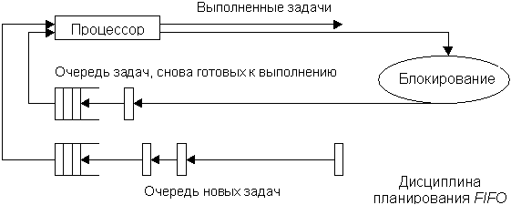
Достоинством данного алгоритма является его простота реализации. Недостатком – при большой загрузке короткие задания вынуждены ожидать в системе долгое время. Следующий подход устраняет этот недостаток.
Алгоритм относится к разряду невытесняющих бесприоритетных.
Названные алгоритмы могут использоваться для пакетных режимов работы, когда пользователь не ожидает реакции системы.
Для интерактивных вычислений нужно прежде всего обеспечить приемлемое время реакции и равенство в обслуживании для мультитерминальных систем; для однопользовательских систем желательно, чтобы те программы, с которыми непосредственно работают, имели лучшее время реакции, чем фоновые задания. Кроме того, некоторые приложения, выполняясь без непосредственного участия пользователя, должны тем не менее гарантированно получать свою долю процессорного времени (например, программа получения электронной почты). Для решения подобных проблем используются приоритетные методы обслуживания и концепция квантования.
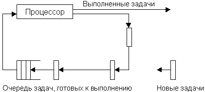
В некоторых ОС есть возможность указывать в явном виде величину кванта времени или допустимый диапазон его значений. Например, в OS/2 в файле CONFIG.SYS с помощью оператора TIMESLICE указывается минимальное и максимальное значения для кванта времени: TIMESLICE=32,256 указывает, что квант возможно изменять в пределах от 32 до 256 миллисекунд.
Дисциплина планирования RR является одной из самых распространенных. В некоторых случаях, когда ОС не поддерживает в явном виде дисциплину карусельного планирования, такое обслуживание можно организовать искусственно. Например, в некоторых ОСРВ используется планирование с абсолютными приоритетами, а при равенстве приоритетов действует принцип очередности. Тогда снять задачу с выполнения может только задача с более высоким приоритетом. При необходимости организовать обслуживание равномерно и равноправно, т.е. чтобы все задания получали одинаковые кванты времени, системный оператор может сам реализовать такое обслуживание. Для этого достаточно всем пользовательским задачам присвоить одинаковые приоритеты и создать одну высокоприоритетную задачу, которая не должна ничего делать, кроме как планироваться на выполнение по таймеру через указанные интервалы времени. Эта задача будет только снимать с выполнения текущее приложение, оно переместится в конец очереди, а сама задача тут же покинет процессор и уступит его следующему в очереди процессу.
В простейшей реализации карусельная дисциплина обслуживания предполагает, что все задания имеют одинаковый приоритет. Если же необходимо ввести механизм приоритетного обслуживания, обычно организуют несколько очередей, в зависимости от приоритетов, и к обслуживанию менее приоритетной очереди переходят только в том случае, когда более приоритетная очередь пуста. По такому алгоритму выполняется планирование в системах OS/2 и Windows NT.
Важная концепция, лежащая в основе многих вытесняющих алгоритмов – это приоритетное обслуживание. Такие алгоритмы используют информацию, находящуюся в описателе потока – его приоритет. В разных системах приоритет определяется по-разному. В одних системах наивысшим значением приоритета может считаться его численно наибольшее значение, в других – наоборот, наивысшим приоритетом считается нулевой.
Как правило, приоритет потока непосредственно связан с приоритетом процесса, в рамках которого выполняется данный поток. Приоритет процесса назначается операционной системой при его создании, при этом учитывается, является ли процесс системным или прикладным, каков статус пользователя, запустившего процесс, было ли явное указание пользователя на присвоение процессу определенного приоритета. Значение приоритета включается в описатель процесса и используется при назначении приоритета его потокам. Если поток инициирован не по команде пользователя, а в результате выполнения системного вызова другим потоком, тогда для назначения ему приоритета ОС должна учитывать параметры системного вызова.
При планировании обслуживания программ согласно описанным ранее алгоритмам может возникнуть ситуация, когда некоторые задачи контроля или управления не смогут быть реализованы в течение длительного промежутка времени из-за возрастания нагрузки в системе (особенно в ОСРВ). При этом последствия из-за несвоевременного выполнения таких задач могут быть серьезнее, чем из-за невыполнения каких-то программ с более высоким приоритетом. В таком случае было бы целесообразно временно изменить приоритет "аварийных" задач (у которых истекает отпущенное для них время обработки), а после выполнения восстановить прежнее значение. Введение механизмов динамического изменения приоритетов позволяет реализовать более быструю реакцию системы на короткие запросы пользователей (что важно при интерактивной работе), но при этом гарантировать выполнение любых запросов.
Таким образом, приоритет может быть статическим (фиксированным) или динамическим (изменяющимся системой в зависимости от ситуации в ней). Так называемый базовый приоритет потока непосредственно зависит от базового приоритета процесса, его породившего. В некоторых случаях система может повышать приоритет потока (причем в различной степени), например, если квант отведенного ему процессорного времени не был использован полностью, или понижать приоритет в противном случае. Например, ОС повышает приоритет в большей степени потокам, ожидающим ввода с клавиатуры, и в меньшей степени – потокам, выполняющим операции с диском.
В некоторых системах, использующих механизм динамических приоритетов, для изменения приоритета используются достаточно сложные формулы, в которых участвуют значения базовых приоритетов, степень загрузки вычислительной системы, начальное значение приоритета, заданное пользователем, и т.п.
Пример
Рассмотрим схему назначения потоков, принятую в Windows NT. В системе определено 32 уровня приоритетов и два класса потоков – потоки реального времени и потоки с переменными приоритетами. Диапазон от 1 до 15 включительно отведен для потоков с переменными приоритетами, а от 16 до 31 – для более критичных ко времени потоков реального времени (приоритет 0 зарезервирован для системных целей). При создании процесса он в зависимости от класса получает базовый приоритет в верхней или нижней части диапазона. Этот базовый приоритет процесса может быть в дальнейшем повышен или понижен операционной системой. Поток первоначально получает значение базового приоритета из диапазона базового приоритета процесса, в котором он был создан. Пусть, например, значение базового приоритета процесса равно k. Тогда все потоки данного процесса получат базовые приоритеты из диапазона [k-2,k+2].
Существуют две разновидности приоритетного планирования: обслуживание с относительными приоритетами и обслуживание с абсолютными приоритетами. В обоих случаях выбор потока на выполнение осуществляется одинаково – выбирается поток, имеющий наивысший приоритет, а момент смены активного потока определяется по-разному. В системе с относительными приоритетами активный поток выполняется до тех пор, пока он сам не покинет процессор (перейдет в состояние ожидания, или произойдёт ошибка, или поток завершится). В системе с абсолютными приоритетами прерывание активного потока, кроме указанных причин, происходит ещё и в случае, если в очереди готовых потоков появляется поток с более высоким приоритетом, чем активный. Тогда выполняемый поток прерывается и переводится в состояние готовности.
В системе с планированием на основе относительных приоритетов минимизируются затраты на переключение, но одна задача может занимать процессор долгое время. Для систем разделения времени и реального времени такой режим обслуживания не подходит, а вот в системах пакетной обработки (например, OS/360) он используется широко. Планирование с абсолютными приоритетами подходит для систем управления объектами, в которых важна быстрая реакция на события.
Во многих ОС используется смешанный тип планирования: алгоритмы планирования на основе приоритетов сочетаются с концепцией квантования.
Примеры
Рассмотрим примеры операционных систем, в которых квантование сочетается с динамическими абсолютными приоритетами.
Операционная система сама изменяет приоритет выполняющихся задач. Например, она повышает приоритет "забытых" задач следующим образом. Если задача не получает управление в течение достаточно долгого промежутка времени (который задается специальным оператором MAXWAIT в файле CONFIG.SYS), ей временно присваивается наивысший уровень приоритета (правда, не превышающий критический). После выполнения этого приложения в течение одного кванта времени ему возвращается прежнее значение приоритета. Этот механизм позволяет задачам с остаточным приоритетом даже в сильно загруженных системах поступать на выполнение хотя бы в краткие интервалы времени. В противном случае они могли бы вообще никогда не получить управления.
Каждый процесс относится к одному из трех приоритетных классов: реального времени, разделения времени или системных процессов. Назначение и обработка приоритетов выполняются для разных классов по-разному. Процессы системного класса, зарезервированные для ядра, имеют фиксированные приоритеты, назначаемые ядром и никогда не изменяющиеся. Процессы реального времени также используют стратегию фиксированных приоритетов, но пользователь может их изменять. Для каждого уровня приоритета по умолчанию имеется своя величина кванта процессорного времени. Процессы разделения времени используют стратегию динамических приоритетов. Величина приоритета вычисляется пропорционально значениям двух составляющих – пользовательской части и системной части. Пользовательская часть может быть изменена администратором или владельцем процесса, причём последним – только в сторону его снижения. Системная составляющая позволяет планировщику управлять процессами в зависимости от того, как долго они занимают процессор, не уходя в состояние ожидания. У тех процессов, которые потребляют большие интервалы процессорного времени, не уходя в состояние ожидания, приоритет снижается, но выделяется больший квант времени. Процессам, часто уходящим в состояние ожидания после короткого периода использования процессорного времени, приоритет повышается.
Планирование в системах реального времени. Планирование здесь имеет особое значение. Поскольку выполнение процессов привязано к внешним условиям, система должна реагировать на сигналы управляемого объекта в пределах заданных временных ограничений. Системы реального времени подразделяются на жёсткие (hard) и мягкие (soft) в зависимости от степени критичности условий работы. Система называется жёсткой, если последствия несоблюдения временных ограничений катастрофичны – например, система управления полетами или атомной электростанцией. Если же последствия нарушения временных ограничений не столь серьёзны, то система называется мягкой, например, система резервирования билетов.
В жёстких системах время выполнения процессов четко ограничено директивными сроками. Директивные сроки – это два числа Tb и Tf. Первое обозначает время, раньше которого процесс не может начать работу, а второе – время, к которому он должен её завершить. В таких системах время завершения выполнения каждой из критических задач должно быть гарантировано для всех возможных сценариев работы системы. Такие гарантии могут быть даны либо в результате исчерпывающего тестирования всех возможных сценариев поведения управляемого объекта и управляющих программ, либо в результате построения статического расписания, либо в результате выбора математически обоснованного динамического алгоритма планирования. Точные критерии возможности существования расписания являются очень сложными в вычислительном отношении. В мягких системах применяются менее затратные способы планирования.
В рассмотренных выше системах UNIX System V Release 4, OS/2 и Windows NT имеется приоритетный класс реального времени. Для потоков этого класса обеспечено только предпочтение в скорости обслуживания, но не гарантировано выполнение заданных временных ограничений. Поэтому эти ОС могут быть основой для построения лишь мягких систем реального времени, но непригодны для жёстких систем.
За последние годы появился ряд интересных подходов к планированию, основанных на дополнительной информации о заданиях:
Для заданной стратегии вытеснения и использования либо предельного времени начала выполнения, либо предельного времени завершения применение планирования, выбирающего для выполнения задание с наиболее ранним предельным временем, позволяет минимизировать долю заданий с нарушенными временными ограничениями.
Если определяется предельное время начала работы, то целесообразно применять невытесняющее планирование. В таком случае желательно, чтобы задания после завершения обязательной или критической части самостоятельно блокировались и позволяли выполняться другим заданиям с предельным временем начала работы. Для системы с предельным временем завершения больше подходит вытесняющая стратегия.
Рассмотрим пример планирования периодических заданий с предельным временем завершения.
Пусть система собирает и обрабатывает данные от двух датчиков, A и B. Сроки сбора данных от датчика A – каждые 20 мс, от датчика B – каждые 50 мс. Процесс снятия данных, включая накладные расходы ОС, занимает: для датчика A – 10 мс, для датчика B – 25 мс.
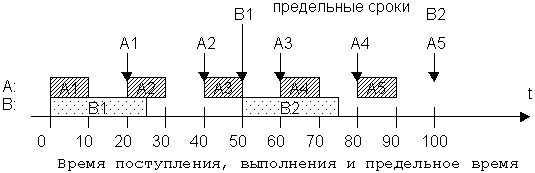
Предположим, что используется схема с приоритетами. В случае более высокого приоритета A задание B получит только 20 мс процессорного времени в двух смежных интервалах по 10 мс, после этого будет достигнуто его предельное время выполнения, а задание ещё не выполнится (см. иллюстрацию ниже).
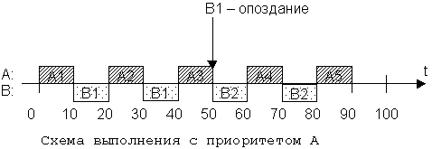
Если более высокий приоритет назначить заданию B, то (что очевидно) в срок не успеет выполниться задание A. Хотя по суммарному времени выполнения 5 заданий А и 2 задания В должны успевать выполниться за 100 мс.
В данной ситуации наиболее целесообразно использовать вытесняющее планирование с предельным временем завершения (т.е. каждый раз в ситуации выбора на выполнение выбирается то задание, которое имеет меньшее предельное время завершения). В момент времени t=0 поступают задания A1 и B1. Поскольку предельный срок A1 наступает раньше, сначала выполняется A1. После его завершения начинает выполняться B1, но после появления в момент t=20 задания A2 его предельное время завершения оказывается меньшим, поэтому выполнение B1 прерывается и не продолжается, пока не выполнится A2 (к моменту t=30). В момент времени t=40 появляется очередное задание A3, но его предельное время завершения больше, чем у выполняющегося B1, поэтому сначала оно завершится (в момент t=45), и только затем начнет выполняться A3. Данная схема проиллюстрирована на рисунке.
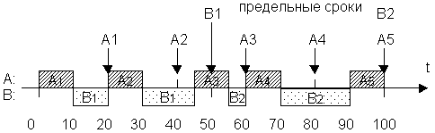
Основной особенностью мультипрограммных вычислительных систем является то, что в их среде параллельно развивается несколько (последовательных) вычислительных процессов. С точки зрения внешнего наблюдателя эти процессы выполняются одновременно, поэтому будем считать их работающими параллельно независимо от того, реально они используют в некоторый момент времени различные процессоры, каналы, устройства или разделяют одни и те же ресурсы во времени. Любая мультипрограммная ОС вместе с параллельно выполняющимися в ней задачами пользователей может быть логически описана как совокупность последовательных процессов. Эти процессы, с одной стороны, состязаются за использование ресонтрольн, переходя из одного состояния в другое, а с другой – действуют почти независимо друг от друга, но образуют систему вследствие установления всевозможных связей между ними путём пересылки сообщений и синхронизирующих сигналов.
Два параллельных процесса могут быть независимыми или взаимодействующими.
Независимыми являются процессы, множества переменных которых не пересекаются. Под переменными в этом случае понимают файлы данных, а также области оперативной памяти, сопоставленные определенным в программе переменным. Независимые процессы не влияют на результаты работы друг друга, т.к. не могут изменить значение переменных другого независимого процесса. Они могут только являться причиной задержек исполнения других процессов, т.к. вынуждены разделять ресурсы системы.
Взаимодействующие процессы совместно используют некоторые общие переменные, и выполнение одного процесса может повлиять на выполнение другого.
Взаимодействовать могут либо конкурирующие процессы, либо совместно выполняющие общую работу. Конкурирующие процессы на первый взгляд действуют относительно независимо, но имеют доступ к общим переменным. Процессы, работа которых построена на обмене данными (результат вычислений одного процесса в явном виде передается другому), называют сотрудничающими.
Многие ресурсы системы могут использоваться совместно несколькими процессами, но к попеременно разделяемым ресурсам в каждый момент времени может иметь доступ только один процесс. Ресурсы, которые не допускают одновременного использования несколькими процессами, называют критическими. В системе должна быть предусмотрена защита от одновременного доступа процессов к критическим ресурсам, иначе в ней могут возникать непрогнозируемые и трудно обнаруживаемые ошибки.
В мультипрограммной системе потоки и процессы протекают асинхронно, с различными скоростями, на которые могут влиять ещё и решения планировщиков относительно других процессов. Поэтому влияние взаимодействующих процессов друг на друга невозможно спрогнозировать. Чтобы предотвратить порчу общих данных и исключить взаимную блокировку, потокам необходимо синхронизировать свою работу. Синхронизация заключается в согласовании скоростей потоков путём приостановки потока до наступления некоторого события и последующей его активизации, когда это событие произойдет.
Взаимодействие сотрудничающих потоков удобно рассматривать в схеме "производитель–потребитель": Подробное описание этой схемы приведено в методических указаниях к лабораторным работам (лаб. работа № 4). Поток-получатель должен обращаться за данными только после того, как они помещены в буфер потоком-отправителем. Если же поток-получатель обратился за данными раньше, то он должен быть приостановлен до момента поступления данных.
При отсутствии синхронизации возможны следующие проблемы:
Например, процесс P1 занимает ресурс X и для дальнейшей работы нуждается в ресурсе Y, а процесс P2 занимает ресурс Y и для дальнейшей работы нуждается в ресурсе X. Возникает ситуация тупика (взаимной блокировки), поскольку ни один из процессов не может завершить работу из-за нехватки ресурса, который, в свою очередь, никогда не освободится.
Существует ряд механизмов синхронизации потоков и процессов. Они могут образовывать иерархию, когда на основе более простых средств строятся более сложные, а также могут быть функционально специализированными, например, средства для синхронизации потоков одного процесса, средства для синхронизации потоков разных процессов при обмене данными и т.п. Для синхронизации потоков прикладных программ программист может использовать как средства операционной системы, так и собственные приемы синхронизации.
Механизмы синхронизации различаются в зависимости от того, относятся они к потокам одного или разных процессов. Для синхронизации потоков одного процесса можно использовать глобальные блокирующие переменные, которые позволяют контролировать работу потоков в критической секции (мониторы, семафоры). Для потоков разных процессов ОС использует системные семафоры, события, сигналы, таймеры и пр. В распределенных системах, состоящих из нескольких процессоров, синхронизация может быть реализована только посредством передачи сообщений. Рассмотрим несколько более подробно некоторые названные средства синхронизации и связанные с ними понятия.
Критическая секция – это часть программы, результат выполнения которой может непредсказуемо меняться, если переменные, относящиеся к этой части программы, изменяются другими потоками, когда выполнение этой части ещё не завершено. Критическая секция всегда определяется по отношению к критическим данным, при несогласованном изменении которых могут возникнуть нежелательные эффекты.
Общие данные, разделяемые несколькими потоками, удобно описывать как ресурс, а обновление данных соответствует распределению или освобождению элементов ресурса.
Рассмотрим примеры.
1. Пусть два потока p1 и p2 асинхронно увеличивают значение общей целочисленной переменной x, которая представляет количество общих единиц ресурса:
p1: ... ; x:=x+1; ... ; ...
p2: ... ; x:=x+1; ... ; ...
Если потоки выполняются на разных процессорах C1 и C2, имеющих внутренние регистры R1 и R2 и разделяемую основную память, то может возникнуть любая из следующих двух последовательностей:
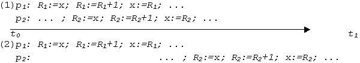
Пусть x содержит значение V в момент времени t0. Тогда, если выполнение потоков p1 и p2 происходит, как в последовательности (1), то в момент t1 переменная x содержит значение V+1 , если же – как в последовательности (2), то переменная x содержит значение V+2. Точно такие же результаты были бы получены, если бы потоки p1 и p1 разделяли во времени единственный процессор с переключением управления между потоками посредством прерываний. В этом примере проиллюстрирован эффект гонок.
2. Рассмотрим другой пример – задачу ведения базы данных клиентов некоторого предприятия. Каждому клиенту отводится отдельная запись в базе данных, в которой среди прочих полей имеются поля заказ и оплата. Программа, ведущая базу данных, оформлена как единый процесс, имеющий несколько потоков, в том числе поток A, который заносит в базу информацию о заказах, поступивших от клиентов, и поток B, который фиксирует в базе сведения об оплате клиентами выставленных счетов. Оба эти потока совместно работают над общим файлом базы данных, используя однотипные алгоритмы, включающие три шага:
Обозначим соответствующие шаги для потока A как A1, A2, A3, а для потока B – B1, B2, B3. Предположим, что тому и другому потоку потребовалось изменить сведения о заказе и оплате одного и того же клиента N. В некоторый момент времени поток A считывает соответствующую клиенту запись в буфер и модифицирует значение поля заказ (шаги A1, A2), но внести эту запись в базу (выполнить шаг A3) не успевает, т.к. его выполнение прерывается, например, вследствие завершения отведенного ему кванта времени. Когда подходит очередь потока B, он тоже успевает только считать запись в буфер и произвести изменения в поле оплата (шаги B1, B2), а внести измененную запись (шаг B3) в базу не успевает.
В такой ситуации окончательный результат, занесенный в базу, будет зависеть от того, какой из потоков – A или B – первым получит возможность закончить свою работу. Но как в том, так и в другом случае часть информации окажется потерянной, хотя все исправления были успешно внесены. Сохранится только изменение, сделанное потоком, который последним занесет запись о клиенте в базу данных. Здесь также имеет место эффект гонок.
В данном примере критической секцией потока A являются A1, A2, A3, а потока B – B1, B2, B3.
Для исключения описанного эффекта по отношению к критическим данным необходимо обеспечить, чтобы в каждый момент времени в критической секции, связанной с этими данными, находился только один поток. При этом неважно, в активном или приостановленном состоянии он находится. Этот приём называют взаимным исключением. Следует отметить, что вне критических секций потоки должны иметь возможность работать параллельно.
Более точно проблема формулируется так.
Пусть имеется мультипрограммная система с общей памятью. Каждая из программ, выполняемых процессором, содержит критическую секцию, в которой организован доступ к общим данным. Программы выполняются циклически. Необходимо так запрограммировать доступ к общей памяти, чтобы в любой момент только одна из программ находилась в своей критической секции.
Относительно системы сделаны следующие предположения:
Требования к критическим секциям:
Будем предполагать, что система циклических потоков для проблемы критической секции имеет следующие программные формы:
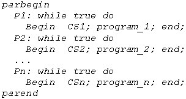
Здесь управляющая конструкция parbegin ... parend используется для указания на то, что часть программы, заключенная между этими операторами, должна выполняться параллельно. Через идентификатор CS с номером обозначены критические секции каждого потока, program_1, program_2, …, program_n представляют собой те части потоков, которые не обращаются к общим данным и могут работать параллельно без каких бы то ни было ограничений.
Самый простой и самый неэффективный способ обеспечения взаимного исключения состоит в том, что ОС позволяет потоку запрещать любые прерывания на время его нахождения в критической секции. Но доверять управление системой пользовательскому потоку опасно – он может надолго занять процессор, а при крахе потока в критической секции крах потерпит вся система, т.к. прерывания никогда не будут разрешены.
Пусть проблема ограничена двумя потоками. Нашей целью является недопущение одновременного вхождения обоих потоков в их критические секции, т.е. взаимное исключение. В то же время должны быть устранены два возможных типа блокировки:
Рассмотрим различные методы решения данной проблемы и покажем ловушки, которые при этом возникают.
Здесь переменная turn указывает то, какой поток должен входить в критическую секцию. Каждый из потоков работает в бесконечном цикле.
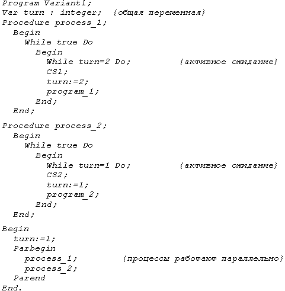
Возможные неприятности: если первый из потоков гораздо медленнее другого, такое решение будет неэффективным. Может возникнуть ситуация, когда поток 2, выполнив работу в своей КС, передаст очередь первому потоку, затем выполнит действия вне своей КС и снова начнёт на неё претендовать, а тот ещё даже не соберется заходить в КС. Тем самым он блокирует второй поток по первому типу, хотя программа и не может оказаться в состоянии полного тупика. Если же один из процессов завершится раньше другого, то второй вообще окажется не в состоянии продолжить выполнение. В рассмотренном примере мы имеем дело с жесткой синхронизацией.
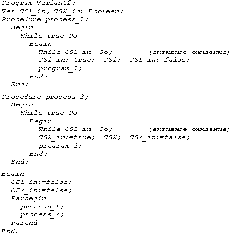
В данном варианте process_1 остается в состоянии активного ожидания до тех пор, пока CS2_in имеет значение "истина". Когда process_2 выйдет из своего критического участка, он выполняет собственный код "выход взаимоисключения", устанавливая для переменной CS2_in значение "ложь". После этого process_1 устанавливает для переменной CS1_in значение "истина" и входит в свой критический участок. Недостатки предыдущего варианта здесь устранены, взаимное блокирование теперь невозможно, но зато оба процесса могут оба одновременно начать выполнять свои входные последовательности взаимоисключения.
Пусть первый процесс проверил переменную CS2_in и обнаружил, что она имеет значение "ложь", но изменить значение своей переменной CS1_in не успел, в то время как второй процесс проделал то же самое. Тогда в результате выполненных проверок они оба одновременно войдут в свои критические интервалы, так что программа данной версии не гарантирует взаимного исключения.
Существует ещё ряд вариантов взаимоисключения, но все они не свободны от недостатков.
В этом алгоритме каждому из процессов соответствует логическая переменная, принимающая значение "истина", если этот процесс претендует на вход в критический интервал. Переменная turn принимает значения, соответствующие номеру выбранного на выполнение процесса.
Рассмотрим, как работает такой вариант. Первый процесс сообщает о своём желании войти в критическую секцию, устанавливая свой флаг (p1_wants_to_come:=true). Затем он переходит к циклу, в котором проверяет, не хочет ли и другой процесс войти в свою критическую секцию, т.е. каково значение переменной p2_wants_to_come. Если нет (переменная имеет значение "ложь"), то он пропускает тело цикла ожидания и успешно входит в свою критическую секцию. Если же первый процесс обнаруживает, что флаг второго процесса тоже установлен, то он входит в цикл ожидания. Здесь он проверяет, какой процесс выбран – анализирует значение переменной turn. Если turn=1, т.е. его очередь выполняться, он пропускает тело своего цикла и снова выполняет цикл проверки в ожидании того момента, когда второй процесс сбросит свой флаг. Если же выбран второй процесс (turn=2), то первый процесс сбрасывает свой флаг и блокируется в цикле ожидания, пока избранным остается второй процесс. Сбрасыванием своего флага он даёт возможность второму процессу войти в свой критический интервал.
Со временем второй процесс выйдет из критической секции и выполнит свой код "выход взаимоисключения" – отдаст приоритет первому процессу и сбросит свой флаг. Теперь у первого процесса появляется возможность выйти из внутреннего цикла ожидания и снова установить собственный флаг. Затем он выполняет внешний цикл проверки. Если флаг второго процесса по-прежнему сброшен, первый успешно входит в свою критическую секцию. Если же второй процесс успел снова выразить желание попасть в критическую секцию и поднял свой флаг, то первому придется войти в тело внешнего цикла проверки, убедиться в своем преимущественном праве на выполнение и подождать, пока второй процесс откажется от входа и сбросит флаг.
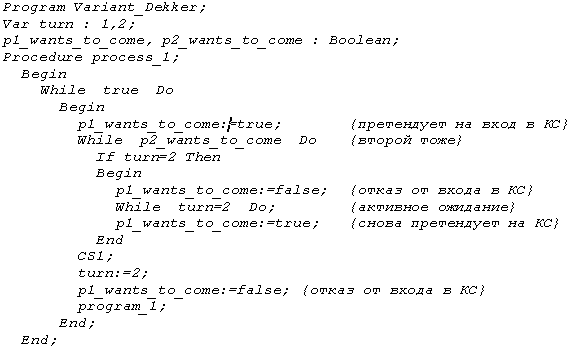
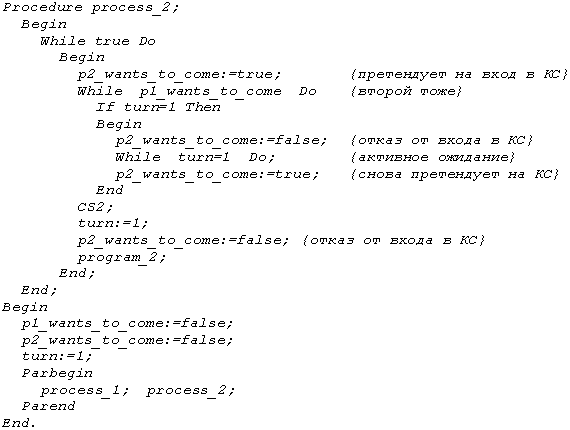
Предложенный алгоритм представляет собой программное решение проблемы взаимоисключения. В нём решены как проблема взаимодействия потоков с разными скоростями, так и проблемы бесконечного откладывания и взаимного выполнения. Существуют и способы аппаратного решения
Недостатком алгоритма Деккера является то, что во время нахождения одного из процессов в критической секции, другой впустую циклится и проверяет общие переменные, вызывая общее замедление системы и не выполняя при этом никакой полезной работы.
Понятия, относящиеся к проблеме взаимоисключения, Дейкстра обобщил в своей концепции семафоров. Семафор – это переменная специального типа, которая доступна параллельным процессам для проведения над ней только двух операций: "закрытия" и "открытия", названных соответственно P- и V-операциями. Значение семафора можно опрашивать и менять только при помощи примитивов P и V и операции инициализации. Семафоры могут быть двоичными (принимать значения только 0 или 1) или считающими (принимать целые неотрицательные значения). Может использоваться вариант реализации считающего семафора и с отрицательными значениями. Операции P и V неделимы в своем выполнении и взаимно исключают друг друга. Примитивы P и V значительно упростили синхронизацию процессов.
Семафорный механизм работает по схеме, в которой сначала исследуется состояние критического ресурса, идентифицируемое значением семафора, а затем уже осуществляется допуск к критическому ресурсу или отказ от него на некоторое время. При отказе доступа к критическому ресурсу используется режим "пассивного ожидания". Поэтому в состав механизма включаются средства формирования и обслуживания очереди ожидающих процессов, которые реализуются супервизором операционной системы. Находясь в списке заблокированных, процесс не проверяет семафор непрерывно, как в случае активного ожидания. Вместо этого процессор занимается полезной работой, что повышает эффективность работы системы.
Пусть S – семафор. Операция V над семафором S записывается как V(S) и увеличивает переменную S на единицу одним неделимым действием, т.е. выборка, инкремент и запоминание не могут быть прерваны, и к S нет доступа другим процессам во время операции V(S). Операция P над семафором S записывается как P(S) и уменьшает переменную S на единицу. Если было S=0, то уменьшение S сделает его отрицательным и процесс, вызвавший P-операцию, ждёт, пока значение S не увеличится. Проверка и уменьшение значения S также являются одним неделимым действием.
Для работы с семафорными переменными необходимо ещё иметь операцию инициализации самого семафора. Обычно эту операцию называют InitSem и она, как правило, имеет два параметра – имя семафорной переменной и её начальное значение. Обращение к ней тогда будет иметь, например, следующий вид: InitSem(S,1).
Рассмотрим вариант реализации семафорных примитивов:
P(S): S:=S-1;
If S<0 Then {остановить процесс и поместить его в очередь ожидания к семафору S}
V(S): If S<0 Then {поместить один из ожидающих процессов очереди семафора S в очередь готовности};
S:=S+1;
Если несколько процессов одновременно запрашивают P- или V-операции над одним и тем же семафором, то эти операции будут выполняться последовательно в произвольном порядке. Аналогично, если несколько процессов ожидают выполнения P-операции и изменяемый семафор становится положительным, то процесс на продолжение выполнения из очереди ожидавших может выбираться по произвольному закону.
В настоящее время используется много различных видов семафорных механизмов. Варьируемыми параметрами, которые отличают различные виды примитивов, являются начальное значение и диапазон изменения значений семафора, логика действий семафорных операций, количество семафоров, доступных для обработки при исполнении отдельного примитива. В некоторых реализациях семафорные переменные могут быть отрицательными, тогда величина отрицательного значения указывает на длину очереди процессов, стоящих в ожидании открытия семафора.
Семафоры и операции над ними могут быть реализованы как программно, так и аппаратно. Программно они могут быть реализованы с использованием режима активного ожидания, однако это сопряжено с потерей эффективности. Как правило, они реализуются в ядре операционной системы, где осуществляется управление сменой состояния процессов.
Семафорные операции дают простое решение проблемы КС. Участки взаимоисключения по семафору S в параллельных процессах обрамляются операциями P(S) и V(S). Пусть S – семафор, используемый для защиты КС. Тогда примитив P(S) представляет собой вход взаимоисключения, а примитив V(S) – выход взаимоисключения. Рассмотрим пример программы, обеспечивающей взаимоисключение при помощи семафора.
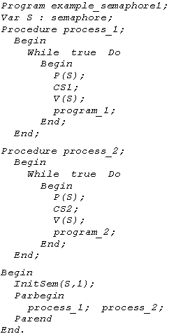
Семафор имеет начальное значение, равное 1. Если первый и второй процессы попытаются одновременно выполнить примитив P(S), то это удастся успешно сделать только одному из них. Предположим, что это сделал первый процесс. Он закрыл семафор, т.е. значение семафора стало S = 0, после чего данный процесс вошел в свой критический интервал. Второй процесс при этом оказывается заблокированным на семафоре – при попытке выполнения операции P(S) он "засыпает". Взаимное исключение гарантировано, т.к. только один процесс может уменьшить значение S до нуля с помощью P-операции. Очевидным образом это решение распространяется на случай n процессов – тогда все другие процессы, пытающиеся войти в свои КС при S = 0, будут вынуждены ожидать по P(S). Взаимное блокирование невозможно, т.к. одновременные попытки войти в свои КС при S = 0 должны, по определению, преобразовываться в последовательные P-операции. После выхода из своей КС процесс выполняет V-операцию, тем самым открывая семафор и предоставляя возможность "пробуждения" блокированным процессам. Тогда один из блокированных процессов переводится в очередь готовности.При реализации возможно одно из двух решений в отношении процессов, которые переводятся из очереди ожидания в очередь готовности при выполнении примитива V(S):
При первом способе возможна следующая последовательность событий. Предположим, что начальное значение семафора было равно единице. Пусть процесс2 в какой-то момент времени выполнит операцию P(S), семафор S станет равным нулю, а процесс2 войдёт в свою КС. Далее процесс1 тоже попытается выполнить операцию P(S) и "заснёт" на семафоре, поскольку значение семафора теперь станет равным –1. После выхода из КС процесс2 выполнит V(S), при этом значение семафора станет равным 0, а процесс1 переведётся в очередь готовности. После активизации процесс1 снова выполнит P(S) и опять "уснёт", то же самое произойдёт с процессом2, если он пожелает войти в свою КС. "Пробуждать" процессы станет некому. Таким образом, возможно возникновение тупиковой ситуации.
При втором способе реализации тупиковой ситуации не будет. Действительно, при аналогичном варианте развития событий отличие начнется с момента активизации процесса1. Он сразу войдёт в свою КС. При этом никакой другой процесс не попадёт в критическую секцию, т.к. семафор остаётся закрытым (его значение равно 0). После окончания работы процесса1 в КС в результате выполнения им операции V(S) значение семафора установится в единицу, если другие процессы не совершали попыток попасть в КС. Если процесс2, а также и другие процессы в случае их большего количества, во время работы процесса1 в КС также выполнят примитив P(S), то после выполнения процессом1 V-операции семафор установится в 0. Следовательно, он будет закрыт для всех процессов кроме того, который успел выполнить P-операцию, т.е. сделал заявку на КС. Таким образом, тупик не возникнет, а взаимоисключение гарантировано.
Возникновение тупиков возможно в случае несогласованного выбора механизма реактивации процессов из очереди, с одной стороны, и выбора алгоритмов семафорных операций – с другой (как мы видим в первом способе реализации).
Реализация семафорных примитивов
В однопроцессорной вычислительной системе неделимость P- и V-операций можно обеспечить с помощью простого запрета прерываний. Сам семафор S можно реализовать записью с двумя полями. В одном поле хранится целое значение S, во втором – указатель на список процессов, заблокированных на семафоре S. Рассмотрим схематичное представление одного из программных вариантов реализации рассмотренных примитивов и процедуры инициализации.
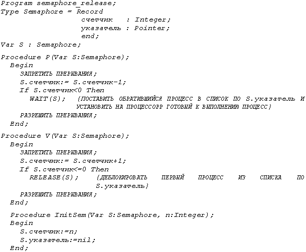
Каждый процесс в ВС может быть охарактеризован числом и типом ресонтрольн, которые он использует (потребляет) и освобождает (производит). Это могут быть различные ресурсы – основная память, заполненные буферы, критические секции и т.п. Семафоры могут быть использованы для учета ресонтрольн и для синхронизации процессов, а также для запирания критических секций.
В случае, когда один процесс для своего продолжения должен получить некоторое сообщение от другого процесса, для их синхронизации используются семафоры. Тогда первый процесс блокируется, выполняя P-операцию, а пробуждается выполнением V- операции другим процессом. Рассмотрим пример программы с такой синхронизацией.
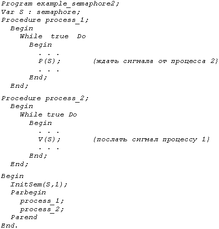
Процесс_1 можно рассматривать как потребляющий некоторый ресурс, обозначенный S, посредством команды P(S), а процесс_2 – как производящий этот ресурс посредством команды V(S).
Процесс-производитель вырабатывает информацию и затем добавляет её в буферную память; параллельно с этим процесс-потребитель удаляет информацию из буферной памяти и затем обрабатывает её. Например, потребитель является процессом вывода, удаляющим запись асинхронно из буферной памяти и затем печатающим её.Эту задачу можно обобщить на случай нескольких буферов.
Пусть буферная память состоит из n буферов одинакового размера, причём каждый буфер может хранить одну запись. Предположим, что добавление к буферу и изъятие из него информации образуют критические секции. Для подсчёта имеющихся в наличии свободных буферов будем использовать семафор empty. Пусть b – двоичный семафор, используемый для взаимного исключения. Тогда процессы производитель и потребитель могут быть описаны следующим образом (этот вариант работает не совсем верно, как мы увидим ниже):
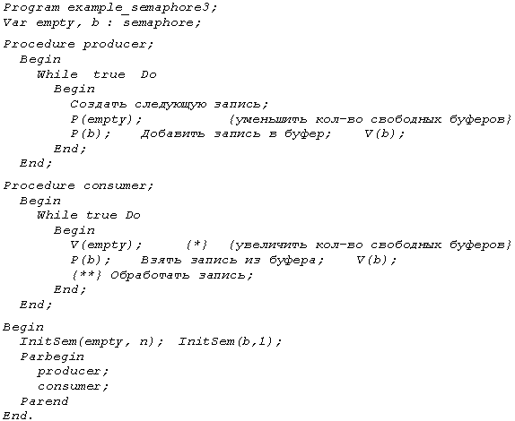
В рассмотренном варианте может сложиться следующая ситуация: если буфер окажется полностью заполнен, а процесс-потребитель будет прерван после выполнения операции V(empty) (в программе обозначено {*}), то производитель сможет повторно записать информацию в последнюю ячейку, хотя она оттуда ещё не считана. Кроме того, consumer может запуститься раньше и начнёт читать из пустого буфера. Если переместить операцию V(empty) после чтения из буфера (обозначено {**}), то первый недостаток будет устранён, но второй все равно останется.
Для того, чтобы избежать упомянутых проблем, необходимо рассматривать заполненный буфер как самостоятельный ресурс, для подсчёта которого используется семафор full, характеризующий число заполненных буферов. Тогда в программе добавится проверка семафора full в процессе-потребителе и увеличение его в производителе:
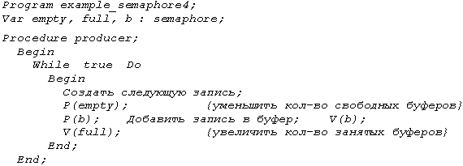
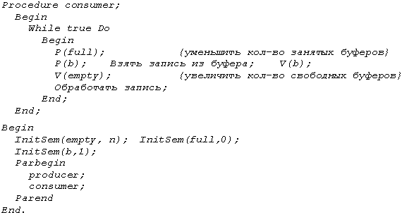
В последнем варианте программа будет корректно работать при любом соотношении скоростей потоков. При этом операции изменения full и empty должны быть неделимыми, иначе значения этих переменных могут стать неверными.
Несмотря на очевидные достоинства (простота реализации, независимость от количества процессов, отсутствие активного ожидания), семафоры имеют ряд недостатков. Семафорные механизмы являются слишком примитивными, т.к. сам семафор не указывает непосредственно на синхронизирующее условие, с которым он связан, или на критический ресурс. Поэтому при построении сложных схем синхронизации алгоритмы решения задач получаются запутанными и ненаглядными.
Нужны понятные и очевидные решения, которые позволяли бы создавать параллельные взаимодействующие программы. Таким решением являются т.н. мониторы, предложенные Хоаром (Hoare).
Монитор (в параллельном программировании) – это пассивный набор разделяемых переменных и повторно входимых процедур доступа к ним, которым процессы пользуются в режиме разделения, причём в каждый момент им может пользоваться только один процесс.
Монитор представляет собой программный модуль, состоящий из инициализирующей последовательности, одной или нескольких процедур и локальных данных. Основные характеристики:
Пример монитора:
Пусть некоторый ресурс распределяется между процессами планировщиком. Этот планировщик имеет переменные, с помощью которых он отслеживает, занят ресурс или свободен. Для получения ресурса процесс должен обратиться к планировщику, причём процедуру планировщика разделяют все процессы, и такое обращение может произойти в любой момент. Но планировщик не в состоянии обслужить более одного процесса одновременно – он и является монитором.
Т.о., монитор – такой механизм организации параллелизма, который содержит данные и процедуры, необходимые для реализации динамического распределения общих ресонтрольн.
Процесс, желающий получить доступ к разделяемым переменным, обращается к монитору, который в свою очередь предоставляет доступ или отказывает в нём. Вход в монитор находится под жёстким контролем. Здесь осуществляется взаимоисключение, т.е. в любой момент времени только один процесс может войти в монитор. Остальные обратившиеся процессы вынуждены ждать, причём режимом ожидания автоматически управляет сам монитор. При отказе в доступе монитор блокирует обратившийся процесс и определяет условие, по которому процесс ждёт. При деблокировании сам монитор и проверяет это условие. Если процесс обращается к некоторой процедуре монитора и обнаруживается, что соответствующий ресурс уже занят, эта процедура монитора выдает команду WAIT с указанием условия ожидания. Процесс мог бы оставаться внутри монитора, но это противоречит принципам взаимоисключения, если в монитор бы затем вошел другой процесс. Поэтому процесс в режиме ожидания вне монитора ждёт, пока требуемый ресурс освободится.
Доступ ко все внутренним данным монитора возможен только изнутри монитора. При первом обращении монитор присваивает своим переменным начальные значения; при последующих обращениях используются сохранённые от предыдущего обращения значения. Для защиты каких-либо данных нужно просто поместить их в монитор.
Процесс, занимавший ресурс, со временем обратится к монитору, чтобы возвратить ресурс системе. Соответствующая процедура монитора может просто принять уведомление об освобождении ресурса и ждать очередного запроса на этот ресурс. Но может оказаться, что уже есть процессы, ожидающие освобождения этого ресурса. Тогда монитор выполняет команду извещения SIGNAL, чтобы один из ожидавших процессов мог получить ресурс и покинуть монитор. Если ресурс никому не требовался, то подобное оповещение не вызывает никаких последствий, а ресурс вносится в список свободных.
Чтобы гарантировать получение ресурса находившимся в ожидании процессом, ему назначается более высокий приоритет, чем новым процессам, пытающимся войти в монитор. В противном случае новый процесс мог бы перехватить ресурс в момент его освобождения, что при многократном повторении приведет к бесконечному ожиданию.
Для ОСРВ можно организовать дисциплину обслуживания на основе абсолютных или динамически изменяемых приоритетов.
Пример монитора Хоара:
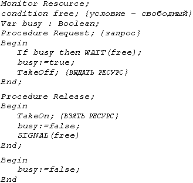
Единственный ресурс динамически запрашивается и освобождается процессами, которые обращаются к процедурам REQUEST и RELEASE.
Если процесс обращается к REQUEST в тот момент, когда ресурс используется, то значение busy=true, и REQUEST выполнит операцию монитора WAIT(free). Обратившийся процесс помещается в конец очереди процессов, ожидающих, пока не будет выполнено условие free.
Когда процесс, использующий ресурс, обращается к RELEASE, операция монитора SIGNAL(free) деблокирует процесс из начала очереди. Он готов сразу после операции WAIT(free), которая его и блокировала, возобновить выполнение процедуры REQUEST. Если же SIGNAL(free) выполняется в то время, когда нет ожидающего условия free процесса, то никакие действия не выполняются.
Доступ к разделяемым переменным ограничен телом монитора, а мониторы входят в состав ядра ОС, поэтому разделяемые переменные становятся системными переменными, что автоматически исключает критические интервалы (два процесса никогда не смогут получить одновременного доступа к разделяемым переменным). Процедуры монитора выполняются только по требованиям процесса.
Преимущества монитора перед другими средствами синхронизации:
Если несколько процессов совместно используют ресурс и работают с ним совершенно одинаково (вспомним пример гонок при работе с базой данных), то в мониторе нужна только одна процедура, в то время как решение с семафорами требует наличия КС в каждом процессе.
Таким образом, мониторы обеспечивают по сравнению с семафорами упрощение организации взаимодействующих вычислительных процессов и большую наглядность при незначительной потере эффективности.Решение задачи производителя-потребителя при помощи монитора Рассмотрим задачу производителя-потребителя в той же постановке: буферная память состоит из n буферов одинакового размера, каждый буфер может хранить одну запись, а добавление к буферу и изъятие из него информации образуют критические секции. Пусть считывание из буферной памяти выполняется по принципу FIFO (First In – First Out), а сама буферная память имеет кольцевую организацию. Это означает, что после заполнения (считывания) элемента с номером N соответствующий указатель перемещается на начало буфера. Тогда для контроля за состоянием буфера потребуется два указателя – номер очередного элемента для записи (назовем его NextIn) и номер очередного элемента для считывания – NextOut, а также счетчик количества элементов в буфере Count. Условия обозначим через NotFull и NotEmpty.
Монитор под названием Buffers будет содержать процедуры добавления элемента в буфер и считывания элемента из буфера: Append и Take. Общими переменными являются массив буферных элементов Buf, а также счетчик Count и указатели NextIn, NextOut. Программная реализация задачи с помощью монитора будет иметь вид:
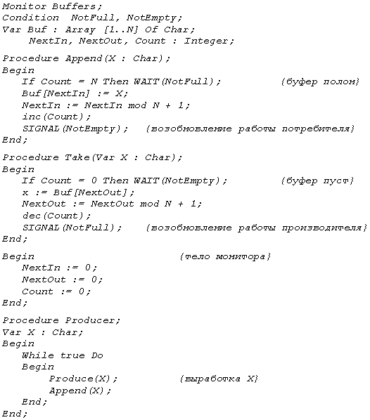
Передача сообщений – один из способов обеспечения синхронизации процессов. Он пригоден для реализации в различных системах (однопроцессорных, многопроцессорных, распределенных).
Системы передачи сообщений могут быть разных типов. Обычно используются два примитива: SEND(получатель, сообщение) и RECEIVE(отправитель, сообщение). Процесс получает сообщение с помощью примитива RECEIVE, отправляет сообщение с помощью примитива SEND.
Синхронизация
Рассмотрим, что происходит после выполнения примитивов. После выполнения SEND существует две возможности: выполнивший его процесс блокируется или продолжает работу. После примитива RECEIVE. Те же две возможности. Но при этом:
Таким образом, как отправитель, так и получатель могут быть блокирующими и неблокирующими. Обычно встречаются три комбинации (в реальных системах реализуются одна или две):
Для примитива SEND наиболее естественным является неблокирующий вариант. Например, он может быть использован при запросе операции ввода-вывода. Недостатком является то, что при возникновении ошибки может начаться непрерывная генерация сообщений, в результате чего произойдёт неоправданная загрузка системы. Кроме того, процесс-получатель в таком случае должен посылать уведомление о получении сообщения.
Для примитива RECEIVE наиболее естественной является блокирующая форма, поскольку если процесс просит информацию, то, видимо, она ему действительно нужна. Недостатком является то, что при сбое или потере сообщения процесс окажется заблокированным навсегда. Для избавления от этого недостатка можно указывать несколько возможных отправителей (если ожидаются сообщения от нескольких источников), тогда после получения любого из них процесс может продолжить работу.
Если использовать неблокирующий вариант RECEIVE, то при более позднем отправлении сообщения (чем попытка его получить) оно может быть потеряно. Для того, чтобы исключить такую ошибку, можно перед выполнением RECEIVE проверять, имеется ли уже сообщение (т.е. совершать какие-то дополнительные усилия).
Адресация
При выполнении примитива SEND необходимо знать получателя. В большинстве реализаций возможно указать, сообщение от какого отправителя должно быть принято. Схемы определения отправителя и получателя в примитивах RECEIVE и SEND подразделяются на две категории: прямая и косвенная адресация.
При прямой адресации:
Примитив SEND() указывает конкретного получателя. Для примитива RECEIVE возможны два варианта. 1) явное указание отправителя, если процессы сотрудничают; 2) неизвестно, откуда может прийти сообщение. Например, когда сервер печати принимает сообщения – запросы на печать, то неизвестно, от какого из процессов они могут поступить. В таком случае используется неявная адресация, т.е. "отправитель" получит конкретное значение только после выполнения операции RECEIVE.
При косвенной адресации:
Сообщения посылаются не прямо от отправителя получателю, а в некоторую совместно используемую структуру данных, предназначенную для временного хранения сообщений (т.н. почтовые ящики). Этот способ отличается эффективностью, т.к. достигается определенная гибкость в использовании сообщений. Могут быть организованы отношения самых разных типов между отправителем и получателем: "один к одному", "один ко многим", "многие к одному", "многие ко многим".
Так, отношение "один к одному" обеспечивает закрытую связь между двумя процессами, изолированную от постороннего вмешательства. Отношение "многие к одному" соответствует модели "клиент-сервер", когда один сервер обслуживает множество клиентов. Отношение "один ко многим" используется при рассылке от одного процесса множеству получателей, т.е. при широковещательном сообщении множеству процессов.
Почтовые ящики
Итак, для сохранения посланных, но ещё не полученных сообщений в системах предусмотрено специальное место, называемое буфером сообщений или почтовым ящиком.
Почтовый ящик – это информационная структура, поддерживаемая операционной системой. Она состоит из головного элемента, в котором находится информация о данном почтовом ящике, и из нескольких буферов (гнезд), в которые помещают сообщения. Размер каждого буфера и их количество обычно задаются при создании почтового ящика. Для пользования таким системным объектом процессы обращаются к ОС с соответствующими запросами. Поскольку в системе может быть много почтовых ящиков, необходимо обеспечить доступ процессу к конкретному ящику.
Если объём передаваемых данных велик, то нецелесообразно пересылать их непосредственно. Лучше отправлять в почтовый ящик сообщение, информирующее процесс-получатель о том, где найти эти данные.
Почтовый ящик может быть связан только с отправителем, или только с получателем, или с парой процессов (существует множество различных вариантов). Правила работы почтового ящика могут быть различными в зависимости от его сложности.
Основные достоинства почтовых ящиков:
Недостатки:
Были созданы механизмы, подобные почтовым ящикам, но реализованные на принципах динамического выделения памяти.
Конвейеры и очереди сообщений
Конвейер – это программный канал связи. Он является средством, с помощью которого можно производить обмен данными между процессами. Функции, с помощью которых выполняется запись в канал и чтение из него, являются теми же самыми, что при работе с файлами. По сути, канал представляет собой поток данных между процессами. Конвейеры представляют собой буферную память, работающую по принципу FIFO, т.е. по принципу обычной очереди. При работе с каналом данные непосредственно помещаются в него, что вызывает ограничения на размер передаваемых сообщений.
Канал (Pipe) был введен в UNIX-системах и имеет размер не более 64 К, поскольку в 16-разрядных мини-ЭВМ, для которых создавалась эта система, нельзя было создать массив данных большего размера. Работает он циклически, по принципу кольцевого буфера. Как информационная структура описывается идентификатором, размером и двумя указателями – на первый элемент и на последний. Указатель Head на рисунке указывает на первый записанный элемент, а Tail – на последний элемент очереди. Заштрихованная область означает наличие информации. Читается (и удаляется) всегда первый элемент, что вызывает изменение значения указателя Head. При записи новых элементов меняется значение указателя Tail. При достижении конца буфера он как бы замыкается в кольцо, меняя значение указателя на единицу.
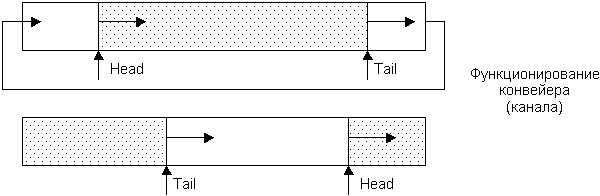
Конвейер представляет собой системный ресурс, для работы с ним процесс должен сделать соответствующий запрос операционной системе.
Очереди сообщений являются более сложным методом связи между взаимодействующими процессами. Одна или несколько задач могут посылать сообщения задаче-приёмнику. При этом только процесс-приёмник может читать и удалять сообщения из очереди, а процессы-отправители могут только помещать туда свои сообщения. Очереди сообщений, в отличие от конвейеров, предоставляют возможность использовать несколько дисциплин обработки:
Второе отличие от каналов состоит в том, что при чтении из канала сообщение автоматически удаляется, а при чтении из очереди – нет, т.е. одно сообщение может быть прочитано при необходимости несколько раз.
Третье отличие состоит в том, что в очередях присутствуют не сами сообщения, а только их адреса в памяти и размер.
Очередь представляет собой системный механизм, поэтому процесс для работы с ней должен получить разрешение на использование общего сегмента памяти с помощью системных запросов API. Во время чтения из очереди задача-приемник пользуется следующей информацией:
Итак, мы рассмотрели основные средства, используемые для синхронизации процессов в мультипрограммной системе.
Термин "память" используется для обозначения любого устройства, способного хранить информацию. Здесь будем иметь в виду оперативную память компьютера (ОЗУ). Управление памятью – одна из основных задач ОС, и занимается им менеджер памяти, который входит в состав ядра ОС.
Существует понятие физической оперативной памяти, с которой собственно и работает процессор, извлекая из неё команды и данные и помещая в неё результаты вычислений. Физическая память представляет собой упорядоченное множество пронумерованных ячеек. Количество ячеек физической памяти ограничено и фиксировано. С другой стороны, программист обращается к памяти с помощью некоторого набора логических имён, которые, как правило, являются символьными и для которых отсутствует отношение порядка. Имена переменных и входных точек программных модулей составляют пространство имён (см. схему).
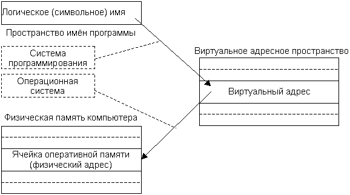
Системное программное обеспечение должно связать каждое указанное пользователем имя с физической ячейкой памяти, т.е. осуществить отображение пространства имён на физическую память компьютера.
Существуют разные схемы такого отображения. В общем случае это отображение осуществляется в два этапа – сначала системой программирования, затем операционной системой. Между этими этапами обращения к памяти имеют форму виртуального или логического адреса. Множество всех допустимых значений виртуального адреса для некоторой программы определяет её виртуальное адресное пространство или виртуальную память.
Появление виртуальной памяти (ВП) стало одним из главных усовершенствований архитектуры компьютеров. Она была впервые реализована в 1959 г. на компьютере "Атлас" в Манчестерском университете и приобрела популярность только спустя десятилетие.
Система программирования осуществляет трансляцию и компоновку программы, используя библиотечные программные модули. В результате полученные виртуальные адреса могут иметь двоичную или символьно-двоичную форму. Для тех программных модулей, адреса которых пока не могут быть определены и имеют по-прежнему символьную форму, окончательная привязка их к физическим ячейкам будет осуществлена на этапе загрузки программы в память перед её непосредственным выполнением.
Одним из частных случаев отображения пространства имён на физическую память является тождественность виртуального адресного пространства физической памяти. При этом нет необходимости осуществлять второе отображение; тогда говорят, что система программирования генерирует абсолютную двоичную программу, которая сможет исполняться только в том случае, если её виртуальные адреса будут точно соответствовать физическим.
Другим частным случаем общей схемы трансляции является тождественность виртуального адресного пространства исходному пространству имён. Здесь уже отображение выполняется самой ОС. Данную схему можно было встретить в простейших компьютерных системах, в которых вместо операционной системы использовался встроенный интерпретатор.
Существуют и промежуточные варианты, когда транслятор-компилятор генерирует виртуальные адреса с последующей настройкой программы на один из виртуальных разделов, а второе отображение осуществляется перемещающим загрузчиком.
Термин "виртуальная память" фактически относится к системам, которые сохраняют виртуальные адреса во время исполнения. Так как второе отображение осуществляется в процессе исполнения задачи, то адреса физических ячеек могут изменяться.
Размер виртуального адресного пространства программы прежде всего зависит от архитектуры процессора и от системы программирования и практически не зависит от объёма реальной физической памяти.
Размер виртуального адресного пространства может быть меньше объёма физической памяти (старые 16-разрядные ЭВМ могли адресовать только до 216 = 64К адресов). В таком случае вся физическая память разбивалась на разделы объёмом по 64К, и на каждый такой раздел с помощью специальных регистров осуществлялось отображение своего виртуального адресного пространства.
Эти величины могут совпадать или, как наиболее распространено в наше время, виртуальное адресное пространство может превышать объём физической памяти. Для таких случаев существуют специальные методы распределения памяти, различающиеся как по сложности, так и по эффективности.
Суть концепции виртуальной памяти заключается в том, что адреса, к которым обращается выполняющийся процесс, отделяются от адресов, реально существующих в оперативной памяти.
Главной особенностью виртуальной памяти является преобразование (или трансляция) адреса, к которому производится обращение со стороны программы, в реальный адрес, причём это преобразование должно выполняться быстро. Механизмы динамического преобразования адресов (ДПА) преобразуют смежные адреса виртуальной памяти в необязательно смежные адреса реальной памяти. Таким образом, пользователь освобождается от необходимости учитывать размещение своих процедур и данных в реальной памяти. Программа обращается к виртуальной памяти по виртуальному адресу.
Чтобы избежать индивидуального отображения элементов информации, они группируются в блоки, и система следит за тем, в каких местах реальной памяти размещаются различные блоки виртуальной памяти. Чем больше размер блока, тем меньшую долю ёмкости реальной памяти нужно затрачивать на хранение информации отображения. Однако крупные блоки требуют большего времени на обмен между внешней и оперативной памятью и ограничивают количество процессов, которые могут совместно использовать оперативную память.
Если все блоки имеют одинаковые размеры, то они называются страницами, а соответствующая организация ВП называется страничной. Если блоки могут быть различных размеров, они называются сегментами, а организация ВП – сегментной.
Адреса в системе поблочного отображения являются двухкомпонентными. Для обращения к конкретному элементу данных программа указывает блок, в котором этот элемент располагается, и смещение этого элемента относительно начала блока, т.е. виртуальный адрес имеет вид упорядоченной пары <начало блока, смещение>. Преобразование адреса ВП в адрес реальной памяти происходит с помощью таблицы отображения блоков, размещаемой в реальной памяти. Эта таблица строится для каждого процесса.
Две модели преобразования адреса – сегментная и страничная – могут применяться как в чистом виде, так и комбинироваться, и тогда сегменты реализуются как объекты переменных размеров, формируемые из страниц фиксированного размера. В таком случае адрес состоит из трех компонентов <сегмент, страница, смещение>.
Способ организации памяти определяет выбор одного из альтернативных вариантов в каждом вопросе, связанном с выделением и использованием оперативной памяти:
Независимо от способа организации памяти выбирается та или иная стратегия управления для достижения оптимальных характеристик. Менеджер памяти выбирает конкретный подход и принимает решение по следующим вопросам:
Первые компьютеры имели очень простую организацию памяти. Память представляла собой пронумерованную последовательность ячеек, содержащих информацию. Программы обращались к этим ячейкам напрямую по их номерам. Любая программа могла обратиться к любой области памяти, что сильно осложняло написание и отладку программ, поскольку ошибка могла легко привести к повреждению важной информации, например, кода или данных ОС. Задачи ОС по управлению памятью сводились только к выделению и освобождению блоков памяти заданного размера.
С развитием архитектуры компьютеров усложнилась организация памяти, а также усложнились и расширились задачи операционной системы по управлению памятью.
Простое непрерывное распределение и распределение с перекрытием (оверлейные структуры)
Самой простой схемой является простое непрерывное распределение (т.н. связное распределение), при котором вся память условно разделяется на три части:
Данная схема не предполагает поддержки мультипрограммирования, поэтому не возникает проблемы распределения памяти между несколькими задачами. Область памяти, отведенная задаче, является непрерывной, что облегчает работу системы программирования. Поскольку в различных однотипных вычислительных комплексах может быть разный состав внешних устройств, для системных нужд могут потребоваться отличающиеся объёмы ОП, поэтому привязка виртуальных адресов программы к физическому адресному пространству осуществляется на этапе загрузки задачи в память.
Вариантов простого непрерывного распределения памяти существовало очень много (примером может являться ОС MS-DOS).
В случае, если необходимо создать программу, логическое (и виртуальное) адресное пространство которой должно быть больше, чем весь возможный объём ОП, используется распределение с перекрытием (т.н. оверлейные структуры). При этом методе распределения предполагается, что вся программа может быть разбита на части – сегменты. Каждая оверлейная программа имеет одну главную часть и несколько сегментов, причём в памяти компьютера одновременно могут находиться только главная часть и один или несколько не перекрывающихся сегментов. После того, как текущий сегмент закончит своё выполнение, возможны два варианта:
Поначалу программисты сами должны были планировать, какие сегменты можно размещать в памяти одновременно, чтобы их адресные пространства не пересекались, и включать в тексты программ соответствующие обращения к ОС. Но с некоторых пор системы программирования стали автоматически подставлять соответствующие вызовы ОС в код программы.
Распределение статическими и динамическими разделами при мультипрограммном режиме
Для организации мультипрограммного режима необходимо обеспечить одновременное нахождение в памяти нескольких задач (целиком или частями). При самой простой схеме распределения память, незанятая ядром ОС, может быть разбита на несколько непрерывных частей (зон, разделов), которые характеризуются именем, типом, границами. Разбиение памяти может быть фиксированным (статическим) или динамическим.
Разделы с фиксированными границами. Разбиение памяти может осуществляться при генерации ОС или по мере необходимости оператором системы. В каждом разделе в каждый момент времени может располагаться по одной задаче, и по отношению к каждому разделу можно применять все те методы, которые используются для однопрограммных систем. Возможно использовать оверлейные структуры, что позволяет создавать большие и сложные программы и в то же время поддерживать коэффициент мультипрограммирования на должном уровне (коэффициент мультипрограммирования – количество параллельно выполняемых программ).
При небольшом объёме памяти (и небольшом количестве разделов) можно увеличить количество параллельно выполняемых приложений за счёт свопинга. При свопинге приостановленная задача может быть целиком выгружена во внешнюю память (на диск), а на её место загружается с диска готовая к выполнению задача, находившаяся в приостановленном состоянии. Особенно эффективен такой приём в отношении интерактивных приложений, которые часто ожидают выполнения операций ввода-вывода.
Важной проблемой является защита ОС и приложений друг от друга. Одной из простейших мер является введение регистров защиты памяти, в которые ОС заносит граничные разделы области памяти текущей задачи. При нарушении адресации возникает прерывание и управление передается супервизору ОС. Для реализации функций защиты требуются специальные аппаратные механизмы.
Основным недостатком такого способа распределения является возникновение фрагментации памяти. В каждом из разделов может оставаться неиспользованная память, которая в сумме даёт весьма ощутимые потери. Но использовать эти свободные части при таком способе распределения не представляется возможным.
Для сокращения потерь были предложены варианты:
Разделы с подвижными границами. Чтобы избавиться от фрагментации, можно попробовать размещать в ОП задачи плотно, одну за другой, выделяя каждой столько памяти, сколько для неё требуется (Первая ОС, реализовавшая этот способ – OS MVT – "мультипрограммирование с переменным числом задач", ОС для больших ЭВМ класса IBM 360). Специальный планировщик (диспетчер памяти) ведет список адресов свободной ОП. При появлении новой задачи он просматривает этот список и выделяет для задачи раздел, объём которого равен необходимому или чуть больше, если память выделяется не ячейками, а некими дискретными единицами. При этом список свободной памяти модифицируется. При освобождении раздела диспетчер пытается объединить смежные свободные участки памяти.
Список свободных участков может быть упорядочен либо по адресам, либо по объёму. Выделение памяти под новый раздел может осуществляться одним из трёх способов:
В первом случае список упорядочивается по адресам. Правило "первый подходящий" приводит к тому, что память для небольших задач будет преимущественно выделяться в области младших адресов и, следовательно, повысится вероятность того, что в области старших адресов будут образовываться фрагменты достаточно большого объёма. При таком способе диспетчеру приходится просматривать в среднем половину списка.
Второй вариант предполагает, что список свободных областей упорядочен по возрастанию их объёма. Тогда при просмотре списка для нового раздела будет использован фрагмент наиболее близкого размера. Просмотреть придется тоже приблизительно половину списка. Оставшийся фрагмент окажется настолько малым, что в нём уже вряд ли удастся что-то ещё разместить, кроме того, он окажется в начале списка. Поэтому в целом такой способ не является эффективным.
Самым эффективным правилом, как ни странно, является последнее. При нём список упорядочивается по убыванию объёмов свободных фрагментов. Очевидно, что такой фрагмент будет найден сразу, причем, поскольку он является самым большим, то после выделения из него раздела для задачи оставшаяся область памяти может быть ещё использована в дальнейшем.
Очевидно, что в силу того, что задачи имеют разные объёмы и появляются и завершаются в произвольные моменты времени, при любой дисциплине обслуживания всегда будет наблюдаться сильная фрагментация памяти. Возможно, что новый раздел нельзя будет образовать, несмотря на то, что суммарный объём свободной памяти окажется превосходящим тот, который необходим для задачи. В такой ситуации возможно организовать т.н. "уплотнение памяти", при котором приостанавливаются все вычисления и диспетчер памяти перемещает свободные разделы в тот или иной конец памяти с соответствующей корректировкой списков. Тогда при определении физических адресов задачи будут участвовать уже новые значения базовых регистров. Недостатками данного решения являются потери времени на уплотнение и приостановка всех процессов. В системах реального времени такой способ непригоден.
Методы распределения памяти, при которых задаче может не предоставляться сплошная область памяти, называются разрывными, или несвязными. Размещение задачи в нескольких областях требует соответствующей аппаратной поддержки – наличия относительной адресации. В настоящее время применяется сегментная, страничная и сегментно-страничная организация памяти, причём эти способы организации памяти относятся как к виртуальному, так и к физическому адресному пространству.
Сегментный способ организации памяти
Первым среди разрывных методов распределения памяти был сегментный. Естественным способом разбиения программы на части является разбиение её на логические элементы – т.н. сегменты. Каждый программный модуль может быть воспринят как отдельный сегмент.
Логически обращение к элементам программы в этом случае будет выглядеть как указание имени сегмента и смещения относительно начала этого сегмента. Физически имя (или порядковый номер) сегмента будет соответствовать некоторому адресу, с которого этот сегмент начинается при его размещении в памяти, и смещение должно прибавляться к этому базовому адресу.
Преобразование имени сегмента в его порядковый номер осуществляет система программирования. ОС размещает сегменты в память и для каждого сегмента получает информацию о его начале.
Каждый сегмент, помещаемый в память, имеет соответствующую информационную структуру, называемую дескриптором сегмента. Для любого исполняемого процесса ОС строит таблицу дескрипторов сегментов и с помощью бита присутствия отмечает для каждого сегмента его текущее местоположение. В дескрипторе сегмента, помимо указания его адреса, длины и бита присутствия, содержатся, как правило, данные о его типе (сегмент кода или данных), правах доступа (можно ли модифицировать, предоставлять другой задаче), отметка об обращениях к данному сегменту (как часто, давно или нет он использовался).
Достоинства сегментного метода:
Недостатки сегментного метода:
В качестве примера операционной системы, применяющей сегментное преобразование памяти, можно назвать OS/2.
Страничный способ организации памяти
В основу страничного преобразования положено разбиение всей памяти на страницы. Страницы, в отличие от сегментов, имеют фиксированную длину, обычно являющуюся степенью числа 2, и не могут перекрываться. Страницы в физической памяти называются физическими страницами, а страницы в виртуальной памяти – виртуальными страницами. Адрес при страничной организации представляет собой упорядоченную пару, состоящую из номера страницы и смещения.
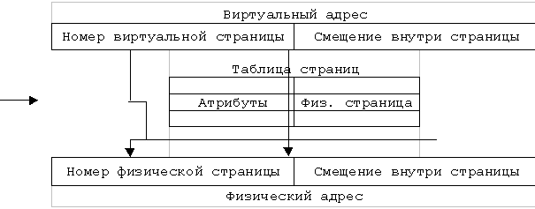
Страничное преобразование заключается в замене номера виртуальной страницы на номер физической. Каждой виртуальной странице ставится в соответствие физическая, т.е. страничное преобразование – это отображение физических страниц в виртуальные. Для этого отображения существует таблица дескрипторов страниц. Отличие от таблицы дескрипторов сегментов состоит в том, что здесь не требуется поле длины.
Поскольку размер страницы – величина фиксированная, то существует проблема его правильного выбора. Чем больше размер страницы, тем меньше будет размер структуры данных, обслуживающих преобразование адресов, но и тем больше будут потери, связанные с тем, что память можно выделять только постранично (возникает фрагментация). На некоторых архитектурах размер страниц задан аппаратно, например, на Intel – это 4 Кбайт, на DEC PDP-11 – 8 Кбайт, а на других архитектурах, таких, как Motorola 68030, размер страниц задается программно.
Важными характеристиками архитектуры процессора являются размеры физического и виртуального адресных пространств, определяющих соответственно ограничение на размер физической памяти и пределы, в которых может меняться виртуальный адрес. Размеры адресных пространств обычно определяются разрядностью архитектуры процессора. Самыми распространёнными сейчас являются 32-разрядные процессоры, позволяющие создавать виртуальные адресные пространства размером 232 байт (4 Гбайта).
Страничное преобразование представляет собой совокупность аппаратных и программных средств, обеспечивающих механизмы виртуальной памяти, свопинга и реализацию других алгоритмов управления памятью.
Основным достоинством страничного способа распределения памяти является минимально возможная фрагментация.
Недостатки страничного преобразования:
Сегментно-страничный способ организации памяти
Для того, чтобы избежать недостатков, сохранив достоинства, был предложен сегментно-страничный способ организации. При этом способе программа тоже разбивается на логически законченные части – сегменты, и виртуальный адрес содержит указание на номер соответствующего сегмента. Вторая составляющая виртуального адреса – смещение относительно начала сегмента – в свою очередь, также состоит из двух полей – виртуальной страницы и индекса. Таким образом, виртуальный адрес теперь состоит из трёх компонентов: сегмент, страница, индекс. Достоинства метода несомненны: сегменты разбиты на страницы, все страницы сегмента загружаются в память, что позволяет уменьшить обращения к отсутствующим страницам в силу того, что вероятность выхода за пределы сегмента меньше, чем за пределы страницы. Наличие сегментов облегчает возможность разделения программных модулей между параллельными процессами, а выделение памяти страницами уменьшает фрагментацию. Но этот способ организации вносит ещё большую задержку доступа к памяти. Существуют специальные методы, позволяющие ускорить обращение к элементу памяти, однако их реализация достаточно сложна и дорога в исполнении, поэтому в ПК такой способ практически не используется.
При использовании свопинга система создает на диске своп-файл. Стратегии управления вталкиванием (выборкой), размещением и выталкиванием (замещением) информации применительно к системам виртуальной памяти используются как при сегментной, так и при страничной организации памяти. Рассмотрим их на примере страниц.
В тот момент, когда процесс обращается к странице, которой нет в оперативной памяти, в действие вступает алгоритм выборки (или алгоритм вталкивания). Он заключается в загрузке страницы с диска в свободную физическую страницу и отображении этой физической страницы в то место, куда было произведено обращение, вызвавшее исключительную ситуацию. Кроме того, необходимо определить, в какой момент следует переписывать страницу (или сегмент) с диска в оперативную память. Вталкивание по запросу производится после появления ссылки и гарантирует необходимость подкачиваемого сегмента или страницы. Существуют модификации алгоритма выборки, которые применяют опережающее чтение (вталкивание с упреждением) – кроме страницы, вызвавшей исключительную ситуацию, в память загружается ещё несколько страниц, к которым наиболее вероятно будет обращаться процесс. Это позволяет уменьшить накладные расходы, связанные с большим количеством исключительных ситуаций, возникающих при работе с большими объёмами данных или кода. Кроме того, оптимизируется работа с диском, поскольку появляется возможность загрузки нескольких страниц за одно обращение. При правильном выборе страниц время выполнения задачи значительно сокращается.
Когда процесс вызывает исключительную ситуацию отсутствия страницы, система должна определить, где в физической памяти следует поместить загружаемую страницу. Это делается с помощью алгоритма размещения. Дисциплины выбора первого подходящего раздела, наиболее подходящего и наименее подходящего уже сравнивались выше, при рассмотрении динамических разделов.
Алгоритмы замещения (выталкивания) вступают в силу, когда нужна свободная физическая страница, но они все заняты. Назначение алгоритмов – определить, какая физическая страница должна быть удалена (записана на диск), чтобы освободить место для новой страницы. Существует несколько вариантов алгоритмов замещения. Проанализируем их достоинства и недостатки.
Если объём физической памяти небольшой и даже часто требуемые страницы не удается разместить в ОП, то возникает т.н. "пробуксовка" – ситуация, когда загрузка нужной страницы вызывает перемещение на диск страницы, которая также активно используется. Варианты борьбы с этим явлением включают: увеличение объёма ОП; уменьшение количества параллельно выполняемых задач; выбор более эффективной дисциплины замещения.
В большинстве современных ОС используется дисциплина LRU как наиболее эффективная. Примеры – операционные системы OS/2, Linux. Но в некоторых ОС, разработчики которых стремились сделать систему максимально независимой от аппаратных возможностей процессора, применяются другие дисциплины. Например, в ОС Windows NT используется правило FIFO. Для того, чтобы устранить его недостатки, применяется "буферизация" тех страниц, которые предназначены к выгрузке, как некоторый промежуточный этап. Т.е., прежде чем выгрузить выбранную страницу, её помечают как кандидата на выгрузку. Если в следующий раз к ней происходит обращение, то она не выгружается, а уходит в конец списка FIFO. В противном случае её выгружают, а в кандидаты на выгрузку выбирают следующую страницу. Поскольку величина такого "буфера" не может быть большой, эффективность страничной реализации памяти в Windows NT ниже, чем у вышеназванных ОС, и даже при существенно большем объёме памяти начинается явление пробуксовки.
В некоторых ОС для борьбы с "пробуксовкой" используется метод "рабочего множества", который заключается в следующем. Частота обращений к странице зависит от её содержимого, причём одни страницы используются значительно чаще, чем другие. Поэтому нет смысла загружать в оперативную память как можно больше страниц. Вместо этого можно выделить подмножество страниц, которое используется часто. Такое подмножество называется рабочим множеством страниц программы. Реально количество активных страниц задачи (за интервал времени) все время изменяется, но для каждой задачи может быть определено среднее количество активных страниц. Его выбор зависит от конкретной программы и осуществляется экспериментально. Размер рабочего множества может быть фиксированным или настраиваться динамически (в некоторых заданных пределах). Для предотвращения пробуксовки достаточно планировать на выполнение такое количество задач, чтобы сумма их рабочих множеств не превышала возможностей системы.
Важнейшей проблемой, которая возникает при организации мультипрограммного режима, является защита памяти. Для того, чтобы выполняющиеся приложения не могли испортить другие вычислительные процессы и саму ОС, необходимо, чтобы доступ к таблицам сегментов или страниц был обеспечен только для кода самой ОС. Для этого код ОС выполняется в привилегированном режиме, из которого можно осуществлять манипуляции с дескрипторами, тогда как выход за пределы сегмента в обычной прикладной программе вызывает прерывание по защите памяти. Каждая прикладная задача имеет возможность обращаться только к своим собственным сегментам. В каждый конкретный момент времени процессор находится в одном из режимов – в режиме пользователя или в режиме ядра. На разных архитектурах способы переключения режима организованы по-разному, но суть от этого не меняется.
Механизм защиты заключается в том, что процессор определяет допустимость операции, сравнивая текущий режим процессора и вид обращения к памяти с атрибутами страницы, к которой производится обращение. Например, атрибут "только чтение" определяет, что операция записи в данную страницу запрещена. Атрибут "страница ядра" – что запрещено любое обращение к данной странице, когда процессор находится в режиме пользователя. Атрибут "только выполнение" – что разрешено только выполнение кода программы, записанного в данной странице. Вместо последнего атрибута может использоваться атрибут "только чтение".
При попытке выполнить запрещённую операцию срабатывает механизм исключительных ситуаций. Возникает исключительная ситуация "страничное нарушение", приводящая к вызову специальной программы-обработчика для этой ситуации. Этот обработчик уже решает, что необходимо предпринять для разрешения конкретного вида страничного нарушения. Страничное нарушение обычно происходит в следующих случаях:
В любом из этих случаев вызывается обработчик страничного нарушения, который является частью ОС. Ему передается причина возникновения исключительной ситуации и соответствующий виртуальный адрес.
Здесь рассмотрены наиболее распространенные атрибуты защиты, на некоторых архитектурах могут быть реализованы другие.
Классические задачи теории ОС
При решении различных задач, при разработке и синхронизации параллельных вычислений бывает полезно сопоставить решаемую задачу с известными схемами и проверить применимость полученного решения к известной задаче. Существует ряд таких "эталонных" задач, которые отражают наиболее часто возникающие перед разработчиками проблемы.
П1 Схема "производитель-потребитель"
Эта схема подробно рассматривалась ранее, поэтому здесь только вспомним о её существовании в ряду классических задач теории ОС.
П2 Схема "читатели-писатели"
Постановка задачи:
Пусть имеются некоторые данные, совместно используемые рядом процессов. Эти данные могут находиться в файле на диске, в блоке основной памяти или в регистрах процессора. Имеется несколько процессов, которые только читают эти данные ("читатели") и несколько других, которые только записывают данные ("писатели"). При этом должны удовлетворяться следующие условия:
В описанной схеме "читатели" не изменяют данные, а "писатели" не считывают информацию. Задача в такой постановке является сужением более общей задачи, в которой каждый процесс может являться как читателем, так и писателем. В таком случае можно любую часть процесса, которая обращается к данным, объявить критическим разделом, и использовать простейшее решение на основе взаимоисключений. Схема "читатели-писатели" является достаточно распространенным частным случаем этой общей задачи, для которого имеется гораздо более эффективное решение. Именно поэтому её принято выделять в отдельную задачу.
Примеры
Можно ли рассматривать схему "производитель-потребитель" в качестве частного случая задачи "читатели-писатели" с одним "читателем" (потребитель) и одним "писателем" (производитель)? Оказывается, нет. Производитель – не просто писатель. Он должен следить за указателем очереди, чтобы определить, куда надо вносить очередную порцию информации, и контролировать состояние буфера, чтобы исключить возможность его переполнения. Аналогично, потребитель – не просто читатель; он изменяет значение указателя очереди, показывая тем самым, что информация считана, и удаляет её из буфера. Кроме того, он должен контролировать наличие информации в буфере.
Рассмотрим два варианта решения поставленной задачи – с приоритетным чтением и с приоритетной записью. Решения справедливы для любого количества как читателей, так и писателей.
Приоритетное чтение означает, что процесс-писатель будет допущен к разделяемым данным только тогда, когда все процессы-читатели закончат свою работу.
Нам потребуется семафор для запрета доступа писателям в критическую секцию. Пусть это будет семафор W. Поскольку необходимо организовать одновременную работу нескольких читателей, то состояние этого семафора должен проверять (и изменять) только первый читатель, получивший доступ к разделяемым данным. Аналогично, если последний находившийся в КС читатель заканчивает чтение, только он должен открывать семафор W. Следовательно, необходимо иметь счетчик количества читателей, находящихся одновременно в КС – пусть это будет R_Count. Для корректного изменения значения этого счетчика читателей нужно ввести ещё один дополнительный семафор S_R, который будет закрываться только на время изменения счетчика R_Count.
Итак, рассмотрим программное решение:
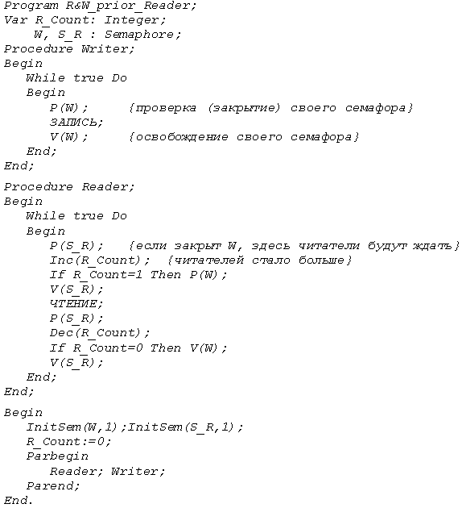
Недостатком рассмотренного варианта является тот, что при большом наплыве читателей писатель может оказаться в состоянии бесконечного ожидания. Схема с приоритетом писателей позволяет избежать этого явления.
Приоритетная запись означает, что при появлении первого же писателя прекращается доступ новых читателей к разделяемым данным (следовательно, нужно подсчитывать количество писателей аналогично тому, как это было сделано с читателями.). Вновь пришедшие читатели выстраиваются в очередь на своем семафоре – значит, для них потребуется ещё один семафор, R. Читатели, находившиеся в КС, постепенно заканчивают работу, а доступ новых закрыт. Следовательно, в какой-то момент последний выходящий из КС читатель откроет семафор W и даст возможность писателю войти в КС. Если за это время появились ещё писатели, они ожидают на семафоре W, который будет открыт прежде, чем семафор R, следовательно, писатели получат преимущественное право работы с разделяемыми данными.
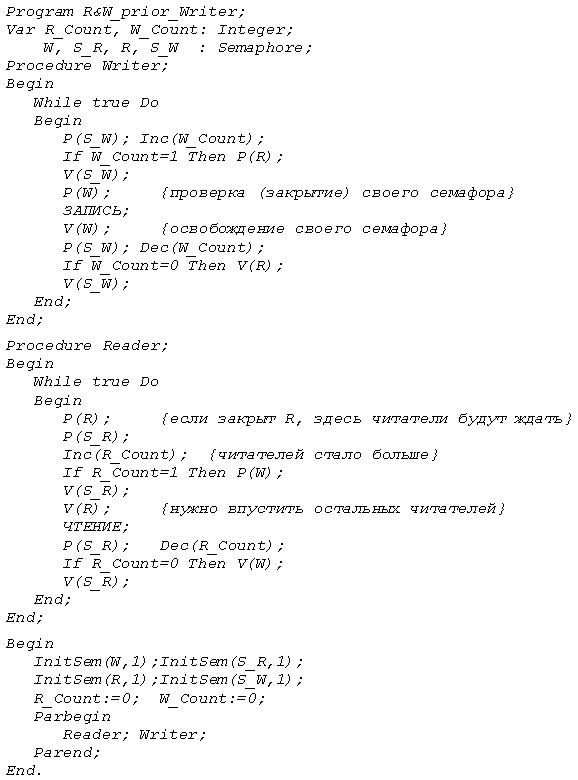
В данном варианте проблемы могут возникнуть при большом количестве писателей – читатели будут ожидать бесконечно. Чтобы этого не случилось, можно использовать различные способы улучшения алгоритма – например, проверять время ожидания читателя в очереди или длину этой очереди (в случае, если накопится очередь определенной длины, пропустить читателей и снова восстановить прежний режим.)
При реализации с помощью монитора потребуется два условия – назовем их Reading_allow, Writing_allow, а также общие переменные R_Count (счетчик числа читателей) и Writing (логическая переменная, истинное значение которой означает, что идет запись). Для начала или окончания чтения или записи процесс должен обратиться с вызовом соответствующей процедуры монитора. Команды WAIT и SIGNAL рассматривались при изучении мониторов.
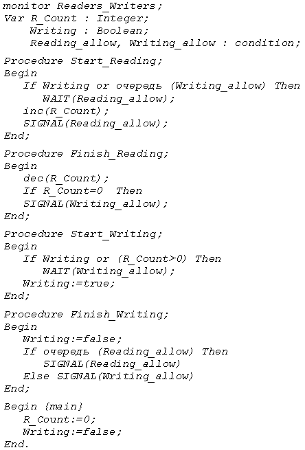
П3 задача "об обедающих философах"
Дейкстра сформулировал эту любопытную задачу, которая иллюстрирует многие ситуации, характерные для параллельного программирования, в частности, проблемы взаимоблокировки и голодания. Она может рассматриваться как типичная задача, возникающая в многопоточных приложениях при работе с совместно используемыми ресурсами, и, следовательно, может выступать в роли тестовой при разработке новых подходов к синхронизации.
Постановка задачи:
Пятеро философов сидят за круглым столом. Жизнь каждого из них предельно проста: некоторое время он предается размышлениям, а некоторое время ест спагетти. Перед каждым философом находится блюдо спагетти, которое постоянно пополняет специальный слуга. На столе лежит ровно 5 вилок, по одной между любыми двумя философами-соседями. Чтобы есть спагетти, философ в соответствии с правилами хорошего тона должен пользоваться двумя вилками – правой и левой. (На рисунке вилки обозначены стрелочками)
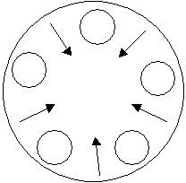
Задача состоит в том, чтобы разработать алгоритм, который обеспечит взаимоисключение, т.к. двое не могут пользоваться одной вилкой одновременно, а также не допустит ситуаций взаимоблокировки (тупик) и голодания (бесконечное откладывание). Пусть вилки и философы пронумерованы от 1 до 5, для определенности по часовой стрелке. Тогда можно любую вилку идентифицировать по её номеру или по месту относительно конкретного философа (левая или правая вилка). Для формального описания алгоритма предпочтительнее первый вариант, для словесного – второй.
Тогда процедура Philosopher(i) будет описывать поведение i-го философа и в общем случае выглядеть следующим образом:
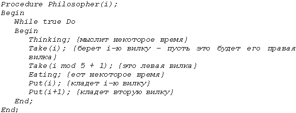
Каким же должен быть алгоритм действий, который позволит исключить неприятные ситуации (см. выше)?
Возможны следующие варианты развития событий:
Итак, мы рассмотрели основные вопросы и задачи теории операционных систем. Компьютерная техника постоянно развивается и совершенствуется, поэтому может случиться так, что через некоторое время какие-то из современных принципов построения и функционирования ОС станут историей…